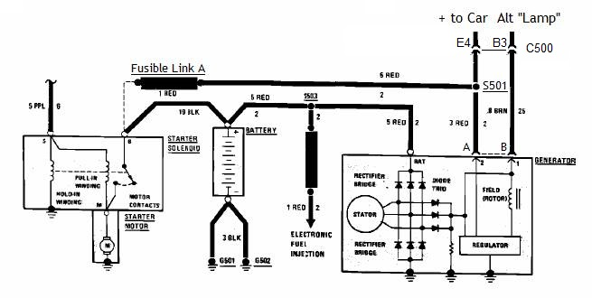
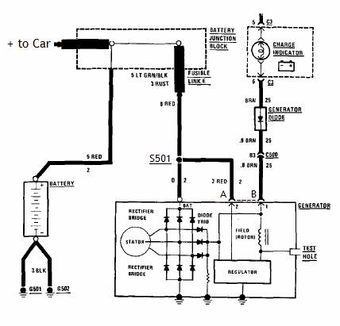

Go Home
Site Map
Go Home
Site Map
Remote Sense Alternator?
Most people don't know that the GM Alternator, both SI and CS versions, is a Remote Sense Power Supply. And when the Remote Sense circuit fails, the alternator can produce weird volts and even runaway voltage. 18 volts and up is common in alternator with bad sense circuit. (Some other makers uses a Remote Sense Alternator. Check charging system wiring. Look similar below? It's a good bet it is a Remote Sense system...)
Wiring Diagram
These two Diagrams illustrate how Remote Sense is used in GM vehicles. Watch the SI alternator side connector pin A carefully.
Study This Diagram...
It's from 1984 Fiero but many GM cars use this wiring.

Notice how pin A is not tied directly to Alt output!
Now Study This Diagram...
Many GM cars, about 1985 models and after, have the same wiring.

Notice how pin A and Alternator output are tied at Splice S501. (Most CS alternators use this plan. Just switch side plug pin A for S in diagram above.)
Note: Pin A = Pin 2. Some diagrams shows A, 2, or both like above...
Why does GM move the A wire?
Different alternator? No, same SI alt.
GM was measuring voltage at different points in the car's wiring harness. The A pin goes to a Volt meter that the Alt can uses. Think of it this way... Treat the wire from pin A to S501 as a Probe on a Volt Meter. And what voltage the wire measures, the alt output terminal can be same voltage or produce much higher voltage because of resistant from bad wiring.
Problem? (Must be a problem or the Ogre won't write about it...)
If the car has good wiring then it's not a problem. But what if the wiring fails? From first diagram, some Examples:
- Pin A is loose (Pin S on a CS alt)
- C500 pin E4 is bad (This can cause C500 to melt or catch fire.)
- Splice S501 is bad
- Fuse Link A is fried
- Starter terminal is loose
- Regulator is bad and can't read pin A.
- Battery is low/bad (Or worse, you try to disconnect the battery as a "Test.")
Now your Alt output gives you weird volts. You think the Alt must be bad because it gives weird Volts. So you replace the Alt and the new one fails for the same problem. Problem is not you're Alternator but to fix bad wiring.
This is why GM rewired the pin A (pin S on CS alt) so it will have a short loop of wire to fail and test.
Does it matter to all alternators or just to older cars?
Any cars using the SI or CS alternators can have the sense circuit fail. It's easier to diagnose in newer cars since newer cars have a short loop of wire.
I have an 84 Fiero, Can I Modify Alternator "A" Wire?
Yes. If and/or When Fusible Link A get burn or pin E4 on C500 is bad and you switch wiring like second image above then you won't fry the ECM, Radio, etc or kill power to the whole car. (Made sure you covered the loose cut end so it can't make a short.)
Remote Sense means what exactly?
See What is Remote Sensing? When the page says power supply, think alternator. When the page says load, think engine and car.